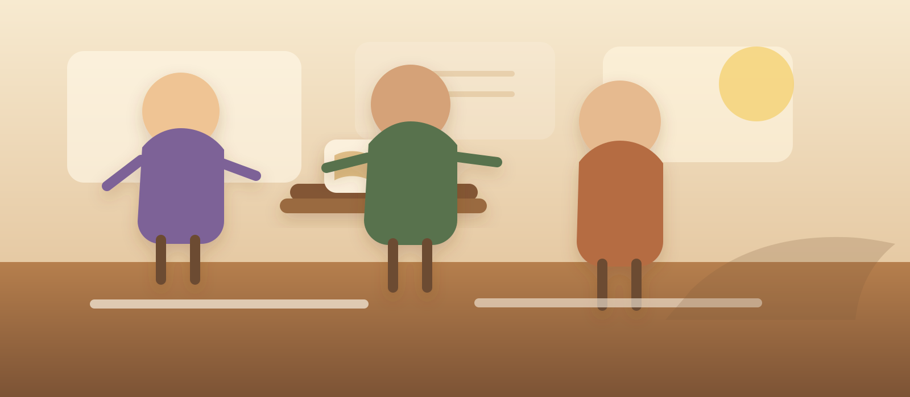

Auftakt
Pfad der Barmherzigkeit
Rolle: Beobachter

Auftakt der Bildergeschichte
Bildfolge: 1 Überblick, 2 Fokus, 3 Vertiefung.
Dieses Bild zeigt
Jedes Bild lenkt deinen Blick auf einen anderen Aspekt der Szene.
Drücke auf „Mission starten“, um die erste Szene zu öffnen.
Leitfrage
Was bedeutet ewiges Leben, wenn Wissen allein noch kein Leben verändert?